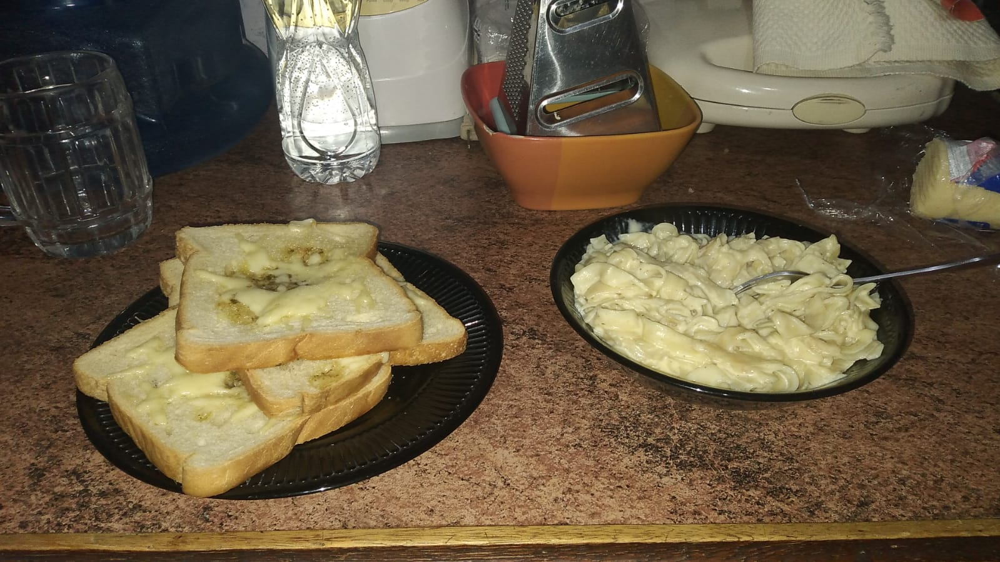
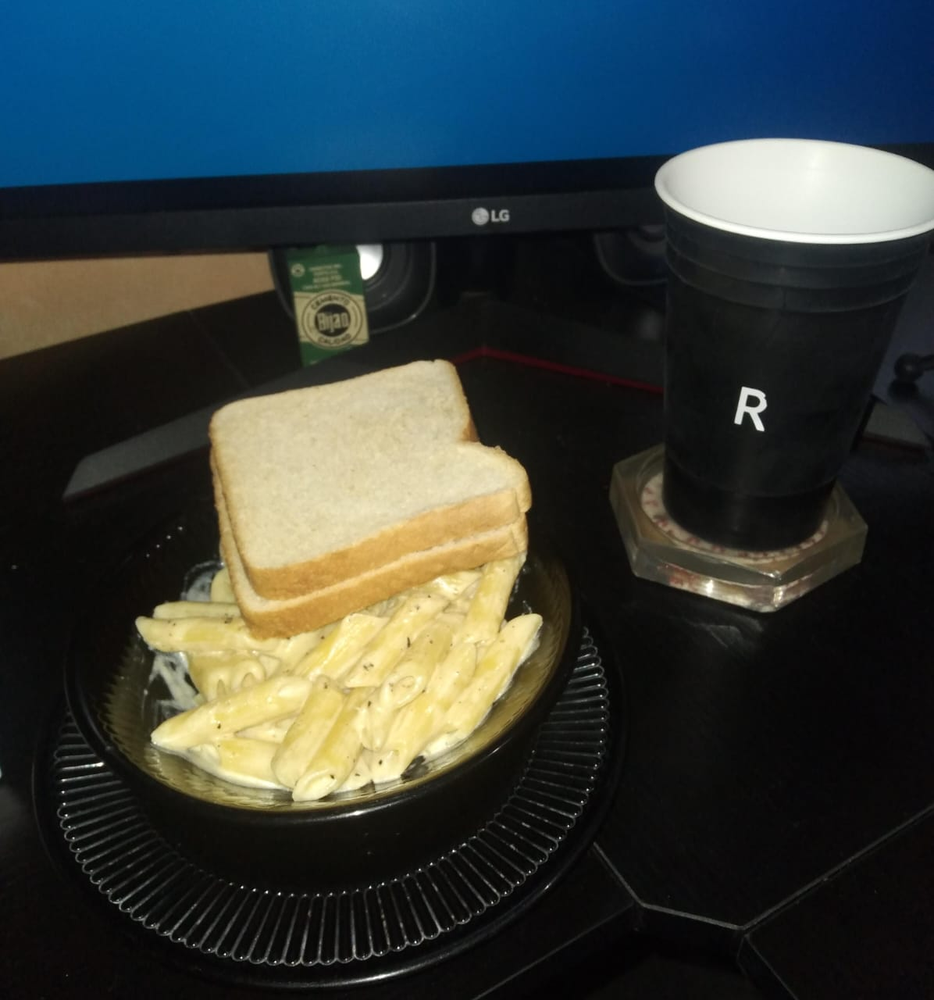
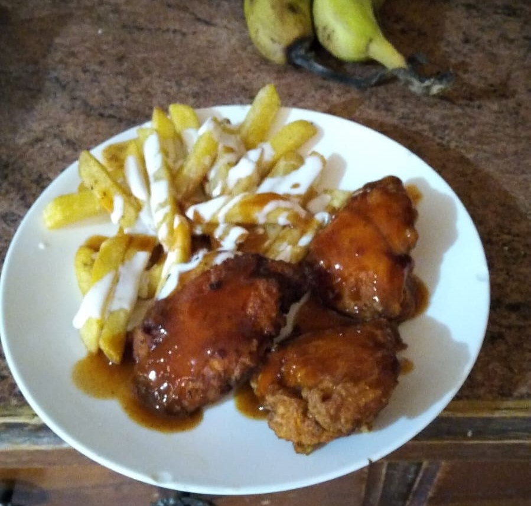
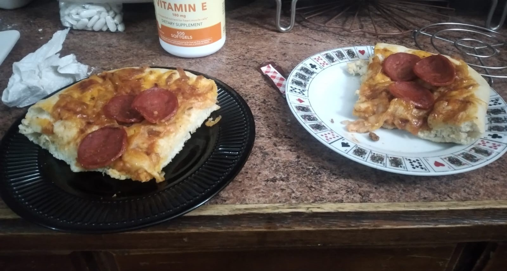
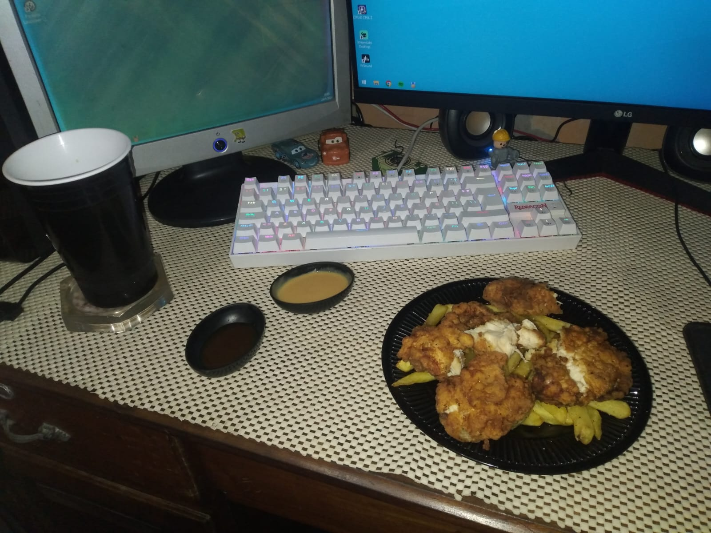
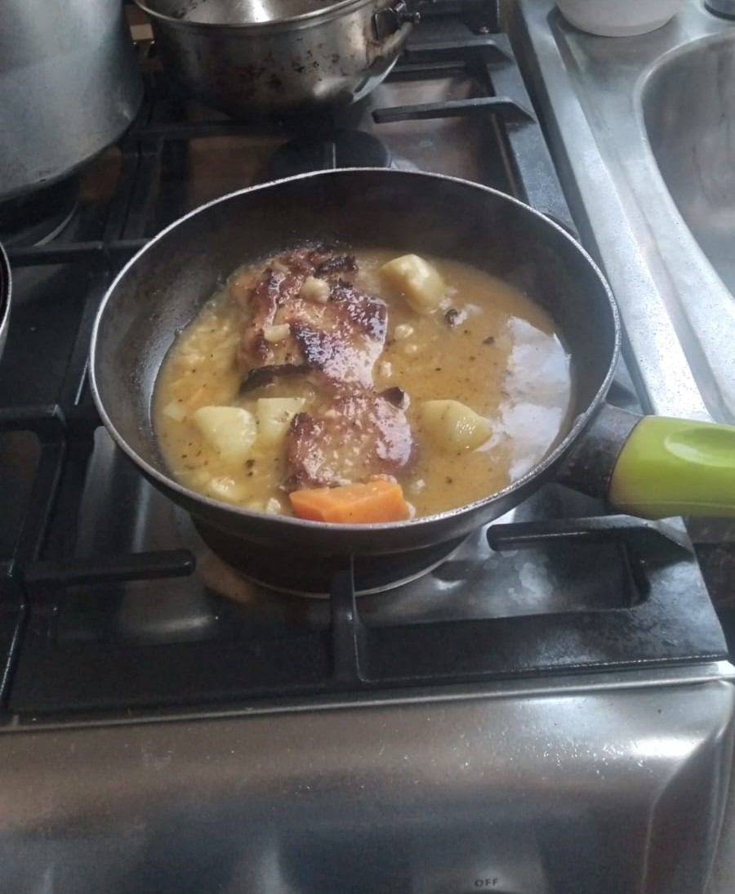

Algunos Platillos que He Hecho
En los ultimos meses de 2023 e inicios del 2024 aprendí a cocinar algunas comidas, lo que mas hice fue pasta con salsa alfredo y a veces lo acompañaba con pan molde horneado con margarina y queso mozzarella:

Cociné boneless con papas fritas:
Hice pizza de Pepperoni desde cero:
Hice Tenders de pollo con Papas fritas y un aderezo realizada por mi:
Hice Chuleta de cerdo en caldo de pollo con arroz blanco, no le tomé foto al plato final:
Hice pizza preelaborada:

Aprendí a hacer otras comidas, unas de ellas son la tilapia empanizada, baleadas, hamburguesas de pollo, panqueques aunque ya sabia hacerlos desde antes, por desgracia a estas comidas no les tomé foto.